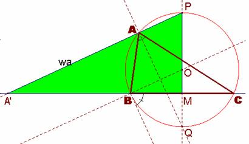
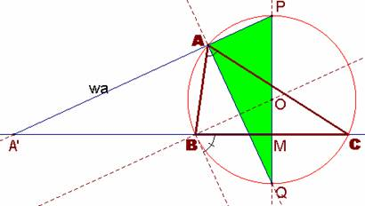
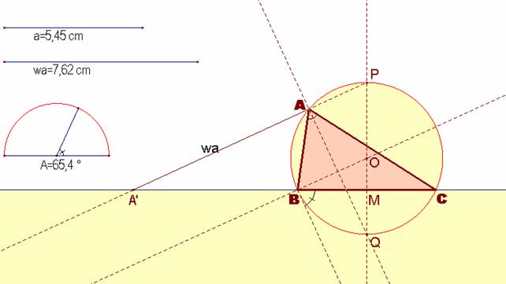

De investigación.
Problema 284.-
429.- Construir un triángulo
conociendo A, a, wa (wa es la bisectriz exterior de A)
Propuesto
por Francisco Javier García Capitán, profesor del IES Álvarez Cubero (Priego de
Córdoba)
Sapiña, J. (1955): Problemas Gráficos de Geometría,Litograf. Madrid.
(Aparejador, Perito Industrial, Profesor ) (p.65)
Solución
de F. Damián Aranda Ballesteros, profesor del IES Blas Infante de Córdoba,
España.
Supongamos el ejercicio resuelto. El triángulo ABC estará inscrito en el arco capaz de ángulo dado A y de segmento, el lado a. Sea pues el triángulo ABC inscrito en dicha circunferencia de centro el punto O.
De este modo aparecerán los siguientes puntos notables para su construcción a partir de los elementos dados. Son los puntos P y Q, diametralmente opuestos, correspondientes a las bisectrices interior y exterior, respectivamente, del ángulo A. Consideramos asimismo los puntos M, punto medio del lado BC, y el punto A’, donde la bisectriz exterior wa corta a la prolongación del lado BC.
De esta forma podemos considerar la semejanza entre los triángulos rectángulos A’MP y MAP.
|
 |
|
 |
En esta semejanza de triángulos se tendrá que:
Por tanto, si llamamos a la longitud del segmento AP como x, habrá de verificarse la siguiente ecuación: x2 + wa∙x − (2r−MQ)∙2r = 0.
En definitiva, , cuya construcción geométrica no presenta mayores dificultades.
Construcción del segmento AP:
1.- Construimos el segmento de longitud, como la media geométrica de los segmentos de longitudes 8r y (2r− MQ)
2.- Determinamos la hipotenusa del triángulo rectángulo de catetos wa y .
3.- Determinamos finalmente el segmento AP de longitud
4.- Una vez obtenido el segmento de longitud AP, determinamos el punto A como el punto donde la circunferencia de centro P y radio AP corta a la circunferencia de centro O y radio r.
|
 |